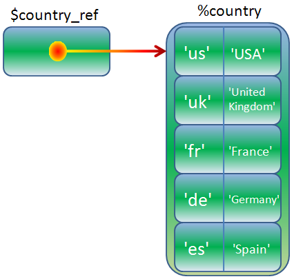
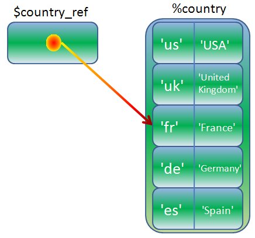

Hash References and Dereferencing Syntax
AAHCClick on A to make all fonts on the page smaller.
Click on A to make all fonts on the page larger.
Click on HC to toggle high contrast mode. When you move your mouse over
some bold words in high contrast mode, related words are automatically highlighted. Text is shown
in black and white.
Lesson Objectives
When you complete this lesson, you will be able to:
Hello and welcome back! This lesson will include lots of valuable information.
References to Named Hashes
Now that you've experienced the power of scalar and array references, you probably aren't surprised to learn that
you can also take references to hashes. In fact, references to hashes are arguably the most useful references in Perl.
Perl remains consistent in its syntax. To take a reference to a hash, put a backslash \ before the hash:
Let's try a short example. Create hash_ref.pl in your /perl3 folder as
shown:
CODE TO TYPE:
#!/usr/bin/perl
use strict;
use warnings;
my %country = ( us => 'USA', uk => 'United Kingdom', fr => 'France',
de => 'Germany', es => 'Spain', mx => 'Mexico',
jp => 'Japan', in => 'India', th => 'Thailand' );
my $country_ref = \%country;
print "\$country_ref = $country_ref\n";
print "$_ = $$country_ref{$_}\n" for keys %$country_ref;
 and run it as shown:
and run it as shown:
INTERACTIVE SESSION:
cold:~$ cd perl3
cold:~/perl3$ ./hash_ref.pl
$country_ref = HASH(0x8c2971c)
mx = Mexico
uk = United Kingdom
fr = France
jp = Japan
de = Germany
in = India
es = Spain
us = USA
th = Thailand
Here's a graphical representation of that operation:

First we printed a stringified hash ref. Then
we show a couple of ways to dereference a hash ref. A hash ref works just like an array ref: you
can use a hash ref everywhere you would ordinarily use the name portion of a hash (the identifier
that comes after the % sigil) in code. So, to access the keys of the hash via the
reference, if we were working on an actual hash like %country, we would type
%country, but since we're working on a hash reference, we substitute the
reference for the identifier portion (country) of the hash and end up with
%$country_ref. Then we applied the same principle to get each successive value in the hash
with the key $_. If we had an actual hash %country, we would access
$country{$_}, but instead, we have a reference, so we end up with
$$country_ref{$_}.
The diagram above illustrates that a hash is a
container that exists independently of the scalars within it, and so a reference to the
hash is not the same as a reference to a member of that hash. A reference to a member of the hash would look like this:

Let's see how we'd do that. Create element_ref2.pl in your /perl3 folder
as shown:
CODE TO TYPE:
#!/usr/bin/perl
use strict;
use warnings;
my %country = ( us => 'USA', uk => 'United Kingdom', fr => 'France',
de => 'Germany', es => 'Spain', mx => 'Mexico',
jp => 'Japan', in => 'India', th => 'Thailand' );
my $hispanic_ref = \$country{mx};
print "\$hispanic_ref = $hispanic_ref\n";
$$hispanic_ref = 'United Mexican States'; # http://en.wikipedia.org/wiki/Mexico
print "$_ = $country{$_}\n" for sort keys %country;
and run it as shown:
INTERACTIVE SESSION:
cold:~/perl3$ ./element_ref2.pl
$hispanic_ref = SCALAR(0x819f75c)
de = Germany
es = Spain
fr = France
in = India
jp = Japan
mx = United Mexican States
th = Thailand
uk = United Kingdom
us = USA
Looks good!
Data::Dumper
Now let's take a different look at hash references. Open map_hash.pl in your
/perl3 folder and modify it as shown:
CODE TO TYPE:
#!/usr/bin/perl
use strict;
use warnings;
use Data::Dumper;
my %marsupial = map { ($_, 1) } qw(koala kangaroo possum wombat);
chomp( my @amphibians = <DATA> );
my %amphibian = map { $_, 1 } @amphibians;
print "Marsupials: ", join( ' ', sort keys %marsupial ), "\n";
print "Amphibians: ", join( ' ', sort keys %amphibian ), "\n";
print Dumper \%amphibian, \%marsupial;
__END__
frog
toad
salamander
newt
caecilian
and run it as shown:
INTERACTIVE SESSION:
cold:~/perl3$ ./map_hash.pl
$VAR1 = {
'toad' => 1,
'newt' => 1,
'salamander' => 1,
'caecilian' => 1,
'frog' => 1
};
$VAR2 = {
'wombat' => 1,
'kangaroo' => 1,
'possum' => 1,
'koala' => 1
};
(You might see the hash elements in a different order.)
Let's take a closer look at this program:
OBSERVE:
#!/usr/bin/perl
use strict;
use warnings;
use Data::Dumper;
my %marsupial = map { ($_, 1) } qw(koala kangaroo possum wombat);
chomp( my @amphibians = <DATA> );
my %amphibian = map { ($_, 1) } @amphibians;
print Dumper \%amphibian, \%marsupial;
__END__
frog
toad
salamander
newt
caecilian
We use the map technique we learned about earlier to initialize a hash. We use
the handy Data::Dumper module, which provides the Dumper()
function which displays the contents of any list of variables, including references. This feature is really useful for
printing a quick dump of a data structure when you're troubleshooting a program. (You can delve more
deeply into modules and even learn how to write your own in the next Perl course!)
I've passed the Dumper() routine two arguments: two references to hashes.
Dumper() can recognize a hash ref (we'll see how later). As you may
recall, a hash ref does not give you the means to get at the name of the variable it references, so
Dumper() prints $VAR1 and $VAR2 instead.
So what's up with this { ($_, 1) } syntax that Dumper() has chosen to denote a hash ref?
That's the topic of our next section!
References to Anonymous Hashes
Perl is consistent in its choice of syntax for references to anonymous hashes. Just as
anonymous array refs are delimited with square brackets (square brackets are
used around array indexes), anonymous hash refs are delimited with curly braces {} (similar to the way
they're used around hash keys). Here's a general picture of the syntax:
And here's that syntax at work in a specific example:
OBSERVE:
$stock_ref = { ants => 10E6, aardvarks => 4, antelopes => 2 }
Fortunately, Perl can tell when you intend for braces to
be used as an anonymous hash ref constructor, even when you're using them as the
implicit result returned from a subroutine. Create anon_hash.pl in your
/perl3 folder as shown:
CODE TO TYPE:
#!/usr/bin/perl
use strict;
use warnings;
my $trans_ref = make_trans_ref( 'French' );
print "J'ai un rendez-vous $$trans_ref{Friday} soir\n";
sub make_trans_ref
{
my $language = shift;
if ( $language eq 'French' )
{
{ Sunday => 'dimanche', Monday => 'lundi', Tuesday => 'mardi',
Wednesday => 'mercredi', Thursday => 'jeudi',
Friday => 'vendredi', Saturday => 'samedi' };
}
elsif ( $language eq 'German' )
{
{ Sunday => 'Sonntag', Monday => 'Montag', Tuesday => 'Dienstag',
Wednesday => 'Mittwoch', Thursday => 'Donnerstag',
Friday => 'Freitag', Saturday => 'Samstag' };
}
else
{
die "Unknown language $language";
}
}
and run it as shown:
INTERACTIVE SESSION:
cold:~/perl3$ ./anon_hash.pl
J'ai un rendez-vous vendredi soir
Perl doesn't require you to use the keyword return to return a value from a subroutine;
the value of the last expression evaluated will be the returned value if there is no return
statement. Still, I recommend that you do use it,
especially in a case like this, because it's difficult to see that we've inserted
anonymous hash refs rather than naked blocks (Perl still gets it right though).
Go ahead and put the return statement in before each of those anonymous hash refs and
see how much clearer the code is.
Of course, you can use any list expression inside the braces, not just a literal list. Create
stock.pl in your /perl3 folder as shown:
CODE TO TYPE:
#!/usr/bin/perl
use strict;
use warnings;
my $stock_ref = get_stock_ref( 'INSECTS' );
print "I have $$stock_ref{ants} ants\n";
sub get_stock_ref
{
my $seeking = shift;
my (@data, $type);
while ( <DATA> )
{
if ( ( my ($what, $number) = /(.*)\s+(\d+)/ ) && ( $type eq $seeking ) )
{
push @data, $what, $number;
}
elsif ( /(\S+)/ )
{
$type = $1;
}
else
{
next;
}
}
return { @data };
}
__END__
INSECTS
ants 1000000
beetles 200000
MAMMALS
aardvarks 4
antelopes 3
FISH
guppies 10
angel fish 40
king crabs 10
and run it as shown:
INTERACTIVE SESSION:
cold:~/perl3$ ./stock.pl
I have 1000000 ants
This isn't very good program design; the get_stock_ref routine can only be
called once before running out of data. Still, the program is useful because it demonstrates that you can populate an anonymous hash
ref with an array. (Although it would be better to populate a named hash and return a reference to it.)
Okay, now here's a handy idiom for setting defaults, used with a hash ref. Create default.pl
in your /perl3 folder as shown:
CODE TO TYPE:
#!/usr/bin/perl
use strict;
use warnings;
use Data::Dumper;
my $supplied_ref = { @ARGV };
my $default_ref = { pants => 3, shirts => 6, ties => 10 };
my $merged_ref = { %$default_ref, %$supplied_ref };
print Dumper $merged_ref;
and run it, first without parameters and then with parameters, as shown:
INTERACTIVE SESSION:
cold:~/perl3$ ./default.pl
$VAR1 = {
'pants' => 3,
'ties' => 10,
'shirts' => 6
};
cold:~/perl3$ ./default.pl socks 4 ties 6
$VAR1 = {
'socks' => '4',
'pants' => 3,
'ties' => '6',
'shirts' => 6
};
Inside the last anonymous hash ref constructor, we dereference first the defaults, then the arguments
that were supplied, so that the arguments take precedence over the defaults (in a list of key-value pairs
assigned to a hash, if any key is repeated, the last occurrence wins).
Dereferencing: Two Rules
There are two rules for dereferencing in general. We've only exercised one
of them so far.
You may construct a dereferencing expression by figuring out what the equivalent expression would be
for the type of thing (scalar, array, or hash) your reference points to, and then substituting the
name or identifier portion of that type of thing (that which follows the $
@, or %) with either:
- Rule 1: A simple scalar (like $array_ref) containing a reference to that kind of thing;
or
- Rule 2: A block containing anything other than a simple scalar that evaluates to a reference to
that kind of thing.
So far, we've only exercised rule 1, because we've only had references contained in simple scalars.
But, while an array element like $insects_ref[2] is a
scalar, it's not a simple one. An expression that evaluates to a reference, say,
make_stock_ref( 'INSECT' ) is not a simple scalar either.
These rules are actually harder to describe than they are to understand, so let's try an example that makes them more
clear. Create ref_rules.pl in your /perl3 folder as shown:
CODE TO TYPE:
#!/usr/bin/perl
use strict;
use warnings;
my $furn_ref = [ qw(sofa chair loveseat piano credenza) ];
my $cost_ref = { sofa => 1500, chair => 300, loveseat => 800, piano => 6000, credenza => 500 };
# Rule 1
print "Cost of third item from \$furn_ref is: ",
$$cost_ref{ $$furn_ref[2] },
"\n";
# Rule 2
my $alt_furn_ref = [ qw(bed rug rocker stool) ];
my $alt_cost_ref = { bed => 3000, rug => 75, rocker => 450, stool => 125 };
my @refs = ( $cost_ref, $alt_cost_ref );
print "Cost of third item in \$alt_furn_ref from second reference in array is: ",
${ $refs[1] }{ $$alt_furn_ref[2] },
"\n";
and run it as shown:
INTERACTIVE SESSION:
cold:~/perl3$ ./ref_rules.pl
Cost of third item from $furn_ref is: 800
Cost of third item in $alt_furn_ref from second reference in array is: 450
That looks pretty tricky, but don't worry! We'll go over all of it, and in the next lesson, we'll
show you how some of those constructions can be simplified.
In the first case—exercising Rule 1—we want to get the third item from
$furn_ref, which is an array reference, $$furn_ref[2], and then print
the cost of that item, which is stored in $cost_ref, which is a hash reference,
$$cost_ref{ $$furn_ref[2] }. The hash key is a complex value, but the
reference is in a simple scalar, $cost_ref, so this is an application of Rule 1.
In the second case—exercising Rule 2—we want to get the third item from
$alt_furn_ref, which is an array reference, $$alt_furn_ref[2]
(application of Rule 1), and then print the cost of that item, which is stored in the second element
in @refs (that is, $refs[1]), which is a hash reference. That is not a
simple scalar, so we apply Rule 2, and put it in a block—that's the { $refs[1] }
part—and then add the complete expression as ${ $refs[1] }{ $$alt_furn_ref[2] }.
Wow. Fortunately, that's about as complicated as it ever gets with references. We'll learn how to
create much more complicated data structures, but for now, our syntax is complex enough. Great work today!
Once you finish the lesson, go back to the syllabus to complete the homework.